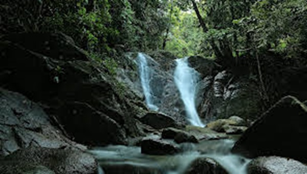

Sejarah
Kota Palopo di Provinsi Sulawesi Selatan memiliki luas wilayah sekitar 247,52 kilometer persegi atau 0,39 persen dari total luas wilayah provinsi. Terbagi menjadi 9 kecamatan dan 48 kelurahan, penduduknya mencapai 184.681 jiwa pada Sensus Penduduk BPS tahun 2020. Berjarak 362 km dari Kota Makassar, dulunya adalah Kota Administratif Palopo dan ibu kota Kabupaten Luwu yang telah beberapa kali berpindah. Dalam sejarahnya, pernah diduduki oleh Belanda pada tahun 1905 karena wilayahnya merupakan bagian dari Kerajaan Luwu.
Melalui berbagai pertimbangan dan aspirasi masyarakat, Kota Administratif Palopo ditingkatkan menjadi daerah otonom Kota Palopo pada tahun 2002, lepas dari Kabupaten Luwu. Awalnya memiliki 4 kecamatan, 19 kelurahan, dan 9 desa, kemudian pada tahun 2016, wilayahnya berkembang menjadi 9 kecamatan dan 48 kelurahan.
Geografis

Kota Palopo yang merupakan daerah otonom kedua terakhir dari empat daerah otonom di Tanah Luwu. Secara Geografis Kota Palopo Kurang Lebih 375 Km dari Kota Makassar ke arah Utara dengan posisi antara 120 derajat 03 sampai dengan 120 derajat 17,3 Bujur Timur dan 2 derajat 53,13 sampai dengan 3 derajat 4 Lintang Selatan, pada ketinggian 0 sampai 300 meter di atas permukaan laut.
Kota Palopo di bagian sisi sebelah Timur memanjang dari Utara ke Selatan merupakan dataran rendah atau Kawasan Pantai seluas kurang lebih 30% dari total keseluruhan, sedangkan lainnya bergunung dan berbukit di bagian Barat, memanjang dari Utara ke Seatan, dengan ketinggian maksimum adalah 1000 meter di atas permukaan laut.
Wisata
Jalan-jalan ke Kota Palopo tidak lengkap jika kamu tidak mengunjungi aneka wisata yang tersebar di seluruh penjuru kotanya. Dari pantai hingga gunung, kamu bisa mengeskplore sepuasnya keindahan kota berjuluk kota idaman ini.
Kambo Highland
Tempat yang berada di atas bukit ini juga menghasilkan udara yang segar dan pemandangan yang indah. Di atas Bukit Kambo, Anda bahkan bisa melihat panorama Kota Palopo. Tempat ini tentu sangat mendukung kegiatan Anda yang doyan foto. Hal menarik lain dari Bukit Kambo adalah adanya fasilitas menginap, kuliner dan kolam renang yang dapat memanjakan anda.
Permandian Agro
Kolam Renang Agrowisata yang satu ini terletak di dalam lingkungan Hotel Agrowisata. Banyak permainan-permainan yang bisa Anda coba bersama keluarga atau teman teman Anda. Anda juga bisa menginap di hotel Agrowisata tersebut.
Jika Anda menginap di hotel tersebut, Anda akan mendapatkan 2 tiket gratis untuk masuk ke kolam renang tersebut. Apabila Anda tidak ingin menginap, Anda harus membayar sekitar Rp 50.000 per orang nya. Tempat ini biasanya ramai pengunjung pada saat hari libur.
Air Terjun Latuppa

Air Terjun Latuppa ini adalah salah satu Objek Wisata di Palopo yang memiliki daya tarik yang khas. Tempat ini bisa di jadikan referensi untuk Anda. Karena air terjun ini memiliki keindahan yang memukau, wajib untuk Anda kunjungi. Air terjun ini juga di jadikan sebagai sumber air bersih bagi para warga di kota Palopo. Air terjun ini juga memiliki paronama yang indah. Jika Anda ingin berfoto tempat ini juga bagus untuk di jadikan background. Lingkungan di sekitar air terjun ini juga indah dan asri.
Pulau libukang

Pulau ini merupakan salah satu tempat yang wajib Anda kunjungi. Karena pulau ini memiliki pemandangan yang indah. Pulau Libukang ini terkenal sebagai salah satu tempat wisata bawah laut yang indah di Palopo. Pulau Libukang ini ccok untuk Anda yang menyukai diving maupun snorkling. Karena pulau ini memiliki pemandangan bawah laut yang sangat indah. Di pulau ini Anda juga bisa menikmati makanan khas Palopo yang lezat.
Pantai labombo

Pantai Lambono ini merupakan tempat wisata yang menyajikan keindahan pantai yang eksotis. Fasilitas yang di sediakan di pantai ini juga cukup bagus. Di pantai ini Anda bisa menikmati kelapa muda yang dapat di ambil langsung dari pohonnya. Harga tiket masuknya pun juga murah dan terjangkau mulai dari Rp 10.000 sampai Rp 15.000 per orang. Anda pun juga bisa menikmati makanan khas Palopo yang disediakan di sana. Misalnya seperti kapurung, ikan bakar, dan masih banyak lagi. Anda juga bisa berenang di pantai ini karena ombak di pantai ini kecil. Adapun tempat pertemuan jika Anda ada keperluan meeting.